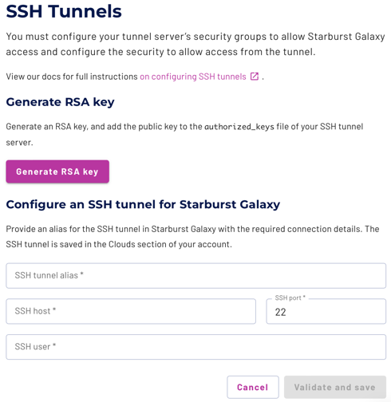
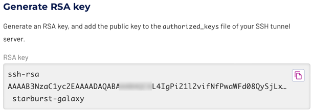

SSH tunnels #
You can use an SSH tunnel between Starburst Galaxy and your data source for an added layer of security. An SSH tunnel is configured in the form of a bastion host or jump server.
This configuration allows access to data sources that are not accessible directly from Starburst Galaxy, such as databases with no public access from outside the virtual private cloud (VPC) that protects your assets in the cloud provider network. All connections from Starburst Galaxy go to the bastion host, and are forwarded inside the private network to the data source.
This page provides general guidance to help you understand SSH tunnels and bastion hosts, but cannot provide step-by-step instructions for every case. This page is not meant to be a comprehensive guide to creating and administering bastion hosts.
Bastion host options #
There are many ways to configure and maintain an SSH tunnel through a bastion host. Consider the following points:
- How many bastion hosts do you need? Use one bastion per data source, one per region, or one per cloud provider?
- Does the simplicity and troubleshooting ease of having one bastion per data source outweigh the cost?
- Your enterprise may have one or more existing bastion hosts already configured at the edge of your VPC. Do you have permission to use an existing bastion and have the credentials to log in there?
- Should you create and configure the bastion host step by step or use a cloud provider’s bastion host service?
- If configuring your own bastion host:
- Use a container or virtual machine?
- Run Windows or Linux as the host’s OS? If Linux, which distribution?
- How will you monitor the performance of the host so that it does not become a bottleneck blocking access to the data source?
General setup phases #
Because there are so many site-specific decisions to make when setting up a network of bastion hosts, Starburst cannot provide detailed setup steps for each possible case. In general, configuring to use an SSH tunnel goes through the following phases:
-
On the cloud provider: Configure the bastion host or bastion service of choice using your cloud provider’s documentation and assistance:
Configure the bastion host’s security to accept input only from Starburst Galaxy. Use the IP range and CIDR block from the IP allowlist that matches the cloud provider and region of your VPC.
Configure a service account on the bastion host to accept the pass-through SSH traffic from Starburst Galaxy, and set up SSH for that account.
-
In Starburst Galaxy: In the navigation menu, click Cloud Settings, then click the name of your cloud provider. On the resulting pane, use the SSH tunnel section to generate an RSA key pair for communication between Starburst Galaxy and one or more bastion hosts, as described in Generate RSA key.
-
In a Terminal session or SSH management app: Copy and install the generated public key to the
authorized_keysfile of the service account on the bastion host. -
In Starburst Galaxy: Return to the SSH tunnels pane to validate the connection, and to create an SSH tunnel alias for use within Galaxy, as described in Create SSH tunnel alias.
-
In Starburst Galaxy: Specify the SSH tunnel’s alias when creating a catalog for connection to a data source on the other side of the bastion host.
Bastion host requirements #
To use an SSH tunnel, you must have the following:
- A server that runs SSH and is configured as a bastion host that resides within the VPC on your cloud provider.
- Network access from the bastion host to the data source within the VPC.
- An assigned public IP address or fully qualified domain name (FQDN) for the bastion host, and network access to it from Starburst Galaxy, typically on port 22.
- The catalog for the target data source must support using SSH tunnels, confirmed on the data source’s catalog page.
- Object storage catalogs do not support access through SSH tunnels.
Once configured, all network traffic and data transfer between Starburst Galaxy and your data source is encrypted, and moves through the bastion host.
This server must be located within the same network and region as the data source and the Starburst Galaxy cluster to minimize data transfer costs and negative performance impacts.
The server also needs to be sufficiently performant to process the data transfer, and have sufficient network connectivity.
Example bastion configuration #
As one example, Starburst provides the steps to configure an SSH tunnel to a bastion host on AWS. You can adapt these steps to your site’s requirements as necessary.
Use the SSH tunnel pane #
To accomplish the second and fourth bastion host configuration phases described in a previous section, use the SSH tunnels pane to generate RSA keys and create an SSH tunnel alias.
In the navigation menu, click Cloud settings, then click the menu for your cloud provider. Each provider’s pane contains an SSH tunnels section. In that section, click the Configure SSH tunnel button to open the SSH tunnels pane.

Generate RSA key #
Use the SSH tunnels pane to generate a pair of RSA keys to secure communication between Starburst Galaxy and one bastion host.
Click Generate RSA key. This generates an RSA key pair and displays the generated public key. The generated private key remains internal to Starburst Galaxy. Copy the generated public key to the service account on the bastion host.

Save the public key from the UI to a local file such as ~/.ssh/bastionkey.
If the bastion host’s account permissions allow it, use the ssh-copy-id
command to copy the public key to the ~/.ssh/authorized_keys file of the
service account on the bastion host. For example, your bastion host
configuration might create a service account named starburst-galaxy. Your
copy command would resemble the following:
ssh-copy-id -i ~/.ssh/bastionkey starburst-galaxy@bastionhostname
You can also open an interactive ssh session to the bastion host to edit the
authorized_keys file directly, and paste the public key to the end of that
file.
As an alternative, your site might use an SSH key management package instead of these manual methods to copy the public key to the bastion host.
Create SSH tunnel alias #
When the RSA public key is generated and installed, next validate the connection and create a named SSH tunnel to use within Starburst Galaxy. You can specify the tunnel’s alias name when configuring a catalog for a data source.
Create at least one tunnel alias for each bastion host. You can create more than one alias to the same host, but you can only assign one alias at a time to each catalog.
The fields of the Configure an SSH tunnel section are as follows:
- SSH tunnel alias: Provide a name for this tunnel. Starburst suggests using a descriptive name that includes the bastion host name and the connected catalog.
- SSH host: The FQDN or IP address of the bastion host as reachable from Starburst Galaxy.
- SSH user: The name of the user account or service account on the bastion host.
- SSH port: Leave the default SSH port number of 22 unless you have a known working SSH port redirection on the bastion host.
With all fields filled in, click Validate and save. Starburst Galaxy confirms connectivity with the specified configuration, then saves the tunnel with its generated private key and alias name.
Is the information on this page helpful?
Yes
No
Is the information on this page helpful?
Yes
No